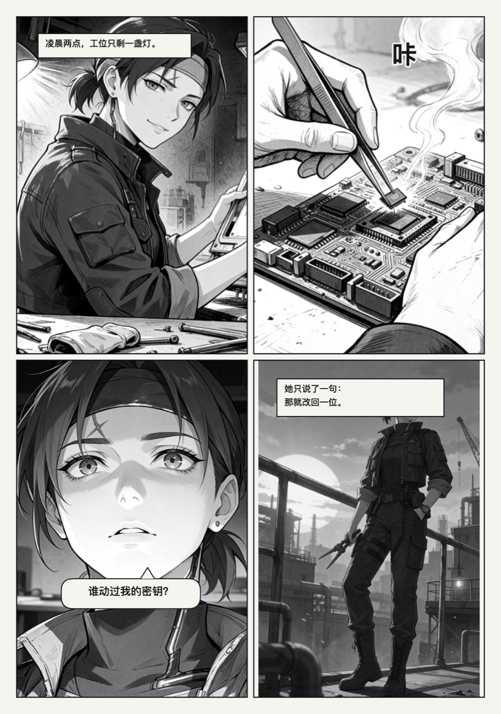

这个板块只关心一件事：能不能用 AI 稳定地画出同一个人，并把画好的分镜拼成一页漫画。
单张好看不难，难的是同一个角色在十几个角度、十几种表情下都不走形——那是连载的门槛，也是这套东西真正值钱的地方。
分镜工坊：AI 出原画，你拼漫画 → 单文件网页。左边画布分格、拖图进格、双击改台词、五种气泡（对话/喊叫/思考/旁白/拟声）、多页、导出 2x PNG；右侧「原画提示词」按格生成，角色设定和画风常驻。不需要联网，双击就能用。一开始我让模型直接出整页——一格一格的画面连同气泡文字一起画。结论是：这条路走不通。图里的中文字十次有八次是错的，气泡位置也没法挪；想把一句台词改两个字，只能整页重画，画好的分镜全废。
拆开之后两件事都变简单了：
上面那个工具就是把「排版」这半边的活，从脚本变成了点上就能用。
做法不新鲜，但顺序要对：先出一张三视图 + 表情 + 手部的角色设定表，白底、无字；之后每一格都拿这张表当参考图去生成，而不是拿上一格当参考。拿上一格做参考会一路漂移，几格之后就不是同一个人了。

用工具拼出来的示例页：四格、两处旁白、一句对话、一个拟声字，导出 2x PNG（2160×3072）
| 环节 | 现在能到什么程度 | 还得人做 |
|---|---|---|
| 角色设计 | 设定表一次出齐，脸和服装能保持一致 | 决定这个人是谁 |
| 逐格出图 | 给定景别和情绪，画面稳定 | 分镜节奏、哪一格该空 |
| 气泡与台词 | 完全可控（工具里改） | 写台词 |
| 导出 | 2x PNG，可打印尺寸 | — |
写下来的是判断，不是教程。